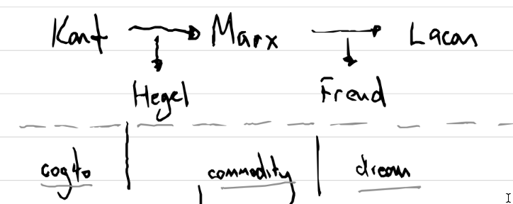

This post continues thinking regarding Zizek's 1989 book The Sublime Object of Ideology. For some thinking on the preface and introduction (in the 2nd edition published by Verso), see 24.02.05.
Here, I want to unfold the thinking in the book's first chapter, titled "How Did Marx Invent the Symptom?". This chapter sets up a constellation of thinkers and theories in connection with each other, the basis of which can be summarised in a diagram as follows:

As shown here, Marx's thought serves as the connecting tissue for Zizek
between Kant and Hegel on the one side (of history), and Freud and Lacan
on the other. The key term missing from this diagram (but which should
be considered to effectively bracket it) is the chapter's titular one,
symptom. Zizek's question is essentially this: what
understanding of this term, symptom, can be unfolded to make sense of
Lacan's statement that Marx invented the idea of it, an unfolding that
bridges the apparent gap between Marxian and psychoanalytic thought?
The philosophical stakes of this unfolding are relatively high. Marx is understood to be a thinker first of foremost of capital, of social and political struggle, of the possibilities of collective undertaking. Freud, to the contrary, is a thinker of the individual, the 'self', of psychoses and sexuality. While Lacan is obviously and avowedly a reader of Freud, he is not obviously a reader of Marx. The non-obviousness of his thought's relation to Marx is one of the reasons (among many - including his controversial reaction to the May '68 student protests, and his controversial invention of the 'short session' in clinical work) that Lacan is sometimes regarded as being 'not political enough' for the Left (at best), or even as distinctly conservative (at worst). Zizek is perhaps most famous for introducing his readers and viewers to a Lacan of the Left, pace those who dismiss him as yet another complacent and over-intelligent white man who calls himself a philosopher.
To see the project of (Lacanian) psychoanalysis as bearing a distinct relation to the Marxian critique of political economy is to throw it into relief as a potential philosophy for and of (leftist) liberation, rather than to disregard it as a blimpish ideology that masks and justifies the sexual deprivation of the rich and powerful.1 Zizek's first task, therefore, is to lay out the "fundamental homology between the interpretive procedure of Marx and Freud - [and] more precisely between their analysis of commodity and of dreams" (Zizek 2009, 3). What Marx sees/theorises in the commodity, Freud does too in dreams.
Freud's work in the interpretation of dreams, Zizek argues, is not to decrypt the hidden content of the unconscious that is masked by their form. The vast majority of people - including me, before I started this PhD - if they have heard about Freudian psychoanalysis at all, will understand its method of interpretation to be exactly this: the gun in my dream that I shot at a duck is actually a penis; and the duck is actually a 'mother hen', which is in fact my mother; and thus the real meaning of the dream is that I have a desire to sleep with my mother that I cannot represent to myself consciously. Freud's method of interpreting dreams, Zizek says, is vastly more sophisticated than this. The dream is not simply a mask (the form) for some body of meaning (of content) that actually resides in the unconscious that is struggling to get out, to express itself. To put it differently, the dream's content cannot be excised (as if it were a tumor) in a singular, scientific, authoritative rationalisation of its form. For Freud, rather, to interpret a dream is to try to understand why the stuff of the unconscious was made to surface as a dream in the first place - and not what this 'stuff' actually is, however juicy those details might seem. The 'secret' of both the commodity and the dream is not revealed by unveiling the content of value or of desire respectively, but rather exists in the way that 'content' is structured through the form itself.
This chapter does the enlightening work of detailing this difficult conception of the interpretation of dreams as a necessary "working through" - and not a functional process of inputs and outputs that could in principle be automated - with respect to Marx's conception of the commodity and its (determinate) relationship with value in his system. This work/connection is enlightening to me precisely because of the 'monetary theory of value' that Rebecca Carson expounds in her 2023 book Immanent Externalities (Carson 2023) (about which I wrote in part in 24-01-27). As implied in the explanation above, as the commodity is to value, the dream is to desire. Both forms - the commodity and the dream - represent a sensuous-nonsensuous thing that bespeaks an entire and hidden system of captivation and capture, of mystification (something appearing formally where it is not), and of fetishism (the subject-object conflation).
The symptom, then, is the name that Zizek gives to the commonality of interpretative method that Freud and Marx share in their (dialectical) treatments of their respective objects of concern. Against Habermas' idea of "inter-subjective communication", there is always a structure at work in the mediation of value/desire:
The structure is always triple; there are always three elements at work: the manifest dream-text [form], the latent dream-content or thought [content], and the unconscious desire articulated in a dream [structure]. (Zizek 2009, 6)
This structure (unconscious desire, or value) is neither strictly objective nor strictly subjective, but rather consists in the impossibility to strictly divide those two domains. It is structure that determines "the real subject matter" (Zizek 2009, 6) of the movement.